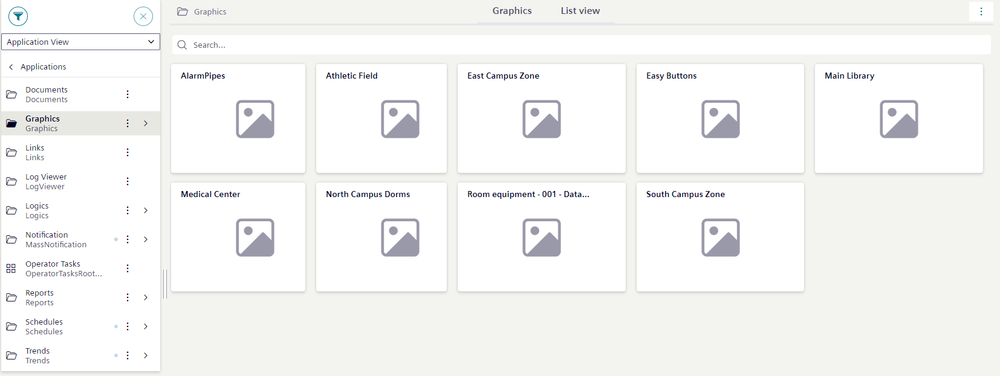

Graphics Workspace
This section provides information about the Graphics Tile View, workspace buttons, and keyboard and mouse behavior.
Select a topic to continue:
Graphics - Buttons
The Graphics workspace provides tools that enhance your view of the current graphic. The tools display when you have a graphic open in the Graphics tab.
Graphics Viewer Workspace | ||
Button | Name | Description |
Coverage Area | Allows you to view the coverage areas on a graphic. | |
Filter | Displays one of the following filter menus for depths, disciplines, and layers, depending on the graphic configuration: Show All and Hide All allows you to toggle between the visibility of all items in the Layers and Discipline menus.
| |
Tooltip | Displays or hides the object tooltips on the graphics. | |
Alarm indicator | Show or hide the alarm indicator icons on the graphic. The button is enabled by default. | |
Scale-to-Fit | Scales the graphic to fit in the viewing area. Once selected, the graphic resizes itself according to window size. | |
Zoom-In () | Allows you to zoom in by + 25% on the active graphic with each mouse click or tap. Icon removed on small screen (mobile) view. Pinch to zoom in or out. | |
Zoom-Out () | Allows you to zoom out by - 25% on the active graphic with each mouse click or tap. Icon removed on small screen (mobile) view. Pinch to zoom in or out. | |
Menu icon (small screens only) | When viewing graphics on a small screen, tap to hide or show other icons that are available on the small screen view. | |
Graphics – Tile View
Graphics are in the Application View under Applications > Graphics.

In System Browser:
- When you select Graphics, the Graphics tab displays all the graphics and viewports in a tile view.
- When you select a Graphics subfolder, the Graphics tab displays the tile icons of the graphics and viewports available for that folder.
- When you select a graphic or viewport, the selection displays in the Graphics tab.
From the Graphics tab:
Click on a graphic or viewport tile to display the graphic in the Graphics tab.
Filtering in the Graphics tab
You can filter the Graphics tab by using the Search box. As you enter the desired text, the filtered graphic objects display in the view.
Keyboard and Mouse Behavior
The following are tasks available in the Graphics that can be accomplished using keyboard and mouse shortcuts or touch-gestures.
|
Feature | Keyboard and Mouse | Touch-Gesture Equivalent |
Primary Selection | Double-Click | Double-Tap |
Secondary Selection | Single-Click | Single-Tap |
Panning | N/A | Touch-and-Drag |
Zooming | CTRL + Mouse Wheel | Pinch Gesture |